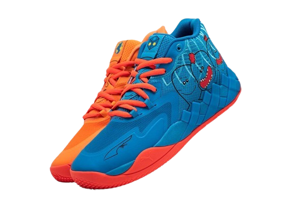

Nike Air Monarch IV
Nike Air Monarch IV — это кроссовки для тренировок с верхом из искусственной кожи и подошвой из пеноматериала Phylon с воздушной подушкой Air-Sole для амортизации. Они обеспечивают хорошее сцепление и подходят как для тренировок, так и для повседневной носки.
$200

ADIDAS SUPERSTAR
Adidas Superstar — это классические кроссовки, изначально разработанные для баскетбола, но ставшие иконой уличной моды. Они имеют характерный носок в форме раковины и верх из кожи, обеспечивающий прочность и стиль.
$150

PUMA MB.01
PUMA MB.01 — это баскетбольные кроссовки, созданные в сотрудничестве с Ламело Боллом. Они обладают ярким дизайном, верхом из сетчатого материала и амортизацией Nitro Foam для максимального комфорта, поддержки и производительности на корте.